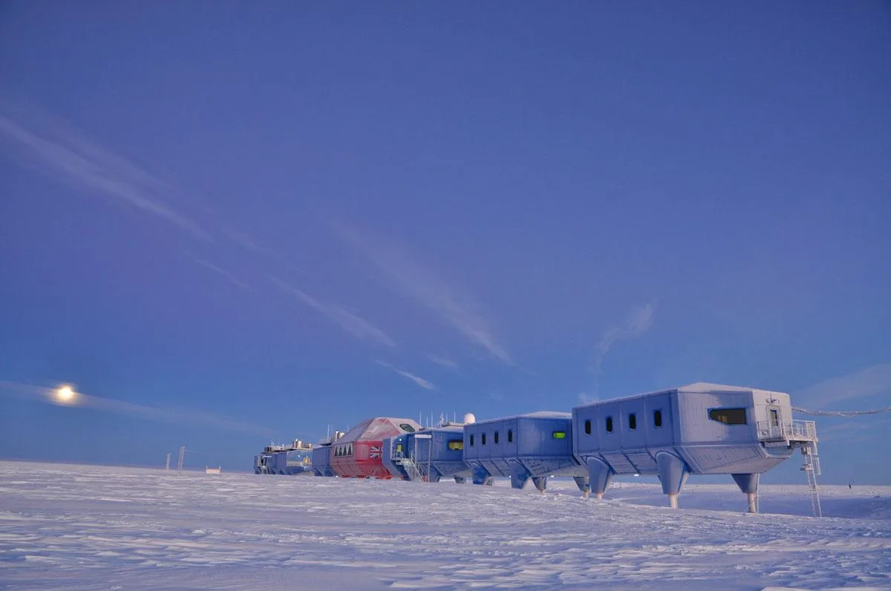
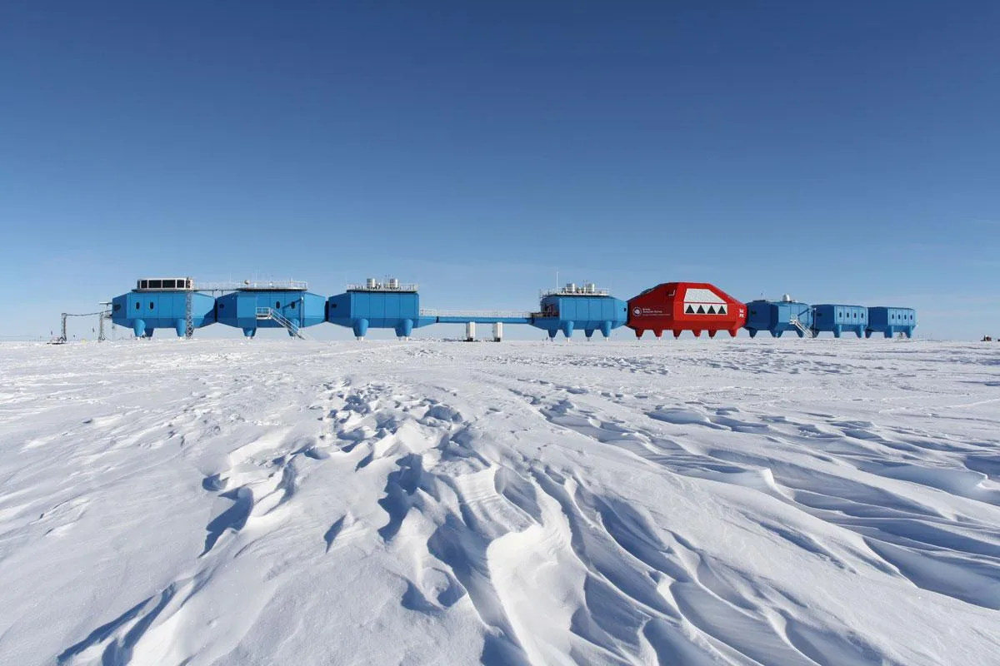
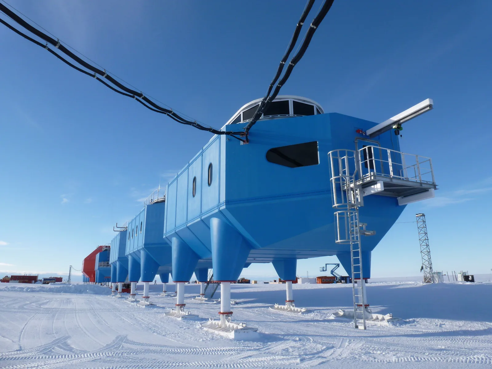
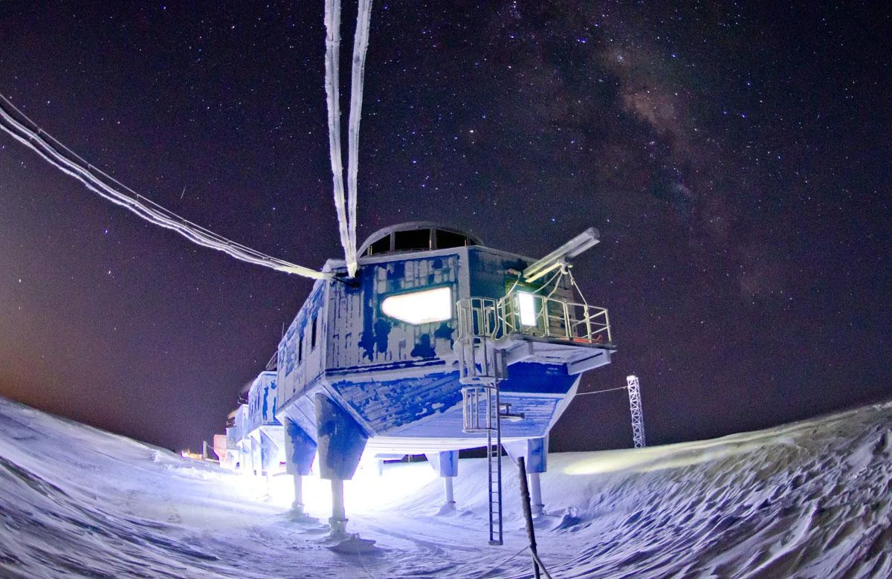
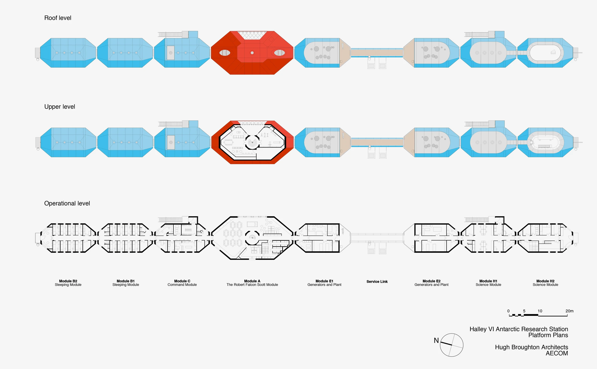
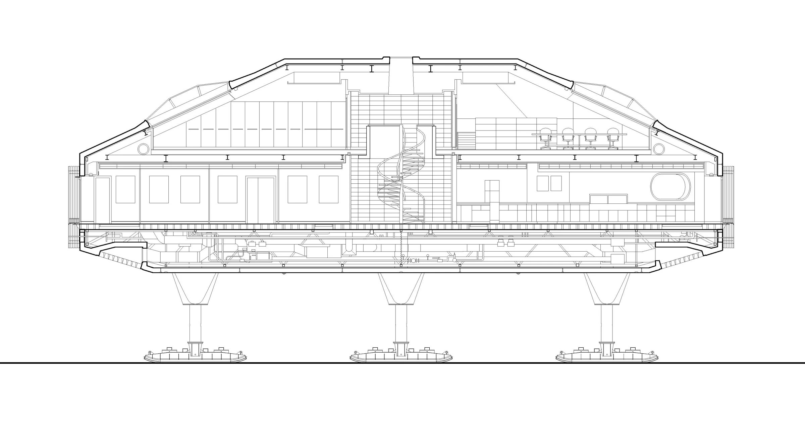
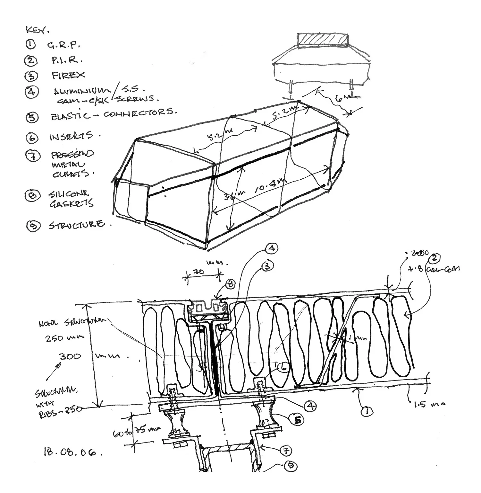
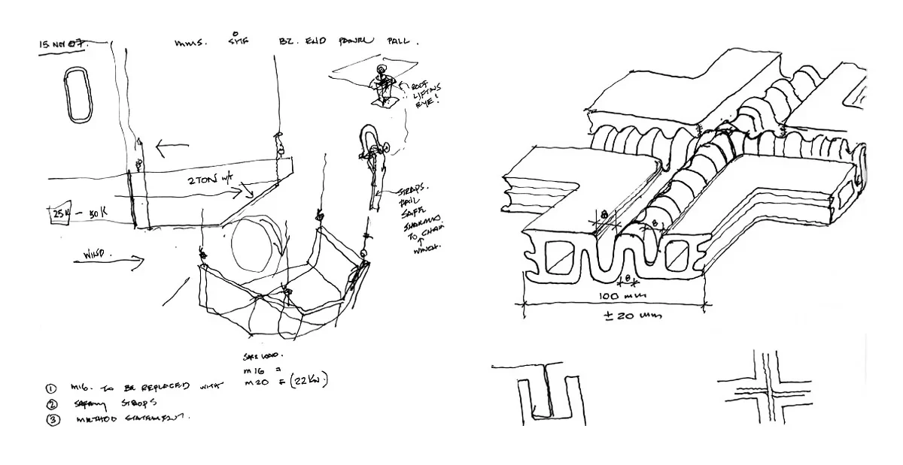

Polar research station · 2013
Halley VI Research Station
Hugh Broughton Architects with AECOM
Brunt Ice Shelf, Antarctica
Scientists collect and analyse environmental data while living alongside their research facilities. Individual modules separate operational and residential needs, with a larger central module for dining and recreation.
Hydraulic legs lift the station above accumulating snow, and large skis allow modules to be towed inland as the ice shelf moves. Prefabricated steel frames and insulated panels reduced work during short Antarctic construction seasons; the red social module also addresses life in prolonged isolation.


Relevant connections
THINK
The station supports environmental research, data collection and scientific analysis in an extreme setting.
Images and drawings / 08













